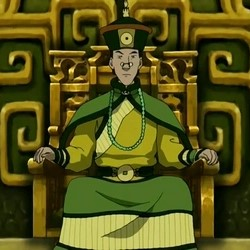
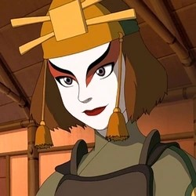
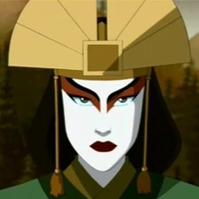
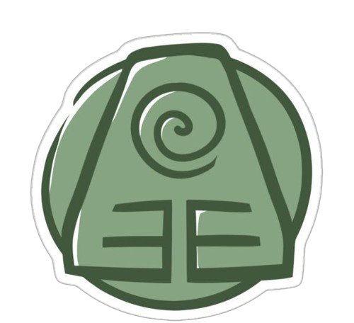

Characters 
Toph
Toph Beifong is een meester in het aardsturen , een van de
machtigste van haar tijd, en de ontdekker van metaalsturen .
Toph was blind sinds haar geboorte en werd voortdurend
neerbuigend behandeld vanwege haar visuele beperking, vooral
door haar overbezorgde ouders, Lao en Poppy Beifong . Toen ze
dassen ontdekte , aardsturende dieren die ook blind zijn, leerde
ze hoe ze aardsturen kon gebruiken als een verlengstuk van haar
zintuigen. Dit gaf haar het vermogen om elke trilling die door
de grond gaat te ‘ zien ’.
Nadat ze haar eigen unieke stijl van aardsturen had ontwikkeld,
verwierf Toph een geharde persoonlijkheid en werd beroemd door
het winnen van ondergrondse aardstuurtoernooien onder de alias
"The Blind Bandit", waarbij ze dit achter de rug van haar ouders
om deed. Hoewel ze aanvankelijk niet geïnteresseerd was in
directe hulp aan de oorlogsinspanningen, koos ze er uiteindelijk
voor om haar oude leven achter zich te laten en met Avatar Aang
en zijn vrienden te reizen als zijn aardsturende leraar , toen
haar ouders uiteindelijk ondraaglijk voor haar werden.
- Naam: Toph Beifong
- Nationaliteit: Aarderijk
- Geslacht: Vrouw
- Kleur haar: Zwart
- Kleur ogen: Grijs (blind)
- Leeftijd: 12
- De Blinde Bandiet
-
Sturing(en): Aarde, metaal, zand en ruimteaarde (meteoriet)
Aardekoning Kuei
De 52e Aardekoning , geboren Kuei , was de heerser van het
Aarderijk tijdens het laatste deel van de Honderdjarige Oorlog .
Gedurende het grootste deel van zijn vroege regering was hij
niets meer dan een boegbeeld, waarbij de ware macht berustte bij
het Grote Secretariaat van de stad , Long Feng . Hoewel hij
kortstondig de volledige macht herwon na de betrokkenheid van
Avatar Aang , werd hij gedwongen Ba Sing Se te ontvluchten na
een staatsgreep , georkestreerd door de Dai Li en prinses Azula
.
Kuei keerde terug om zijn rechtmatige plaats als Aardekoning in
te nemen na het einde van de Honderdjarige Oorlog, en deed
daarna zijn best om een sterke en welwillende heerser te zijn
voor zijn volk om zijn fouten uit het verleden goed te maken.
Zijn nieuw gevonden vastberadenheid leidde er echter bijna toe
dat Kuei de oorlog met de Vuurnatie hernieuwde vanwege de
weigering van Vuurheer Zuko om zijn koloniën uit het grondgebied
van het Aarderijk te verwijderen. Dankzij de tussenkomst van
Team Avatar kon de crisis echter vreedzaam worden opgelost.
- Naam: Aardekoning Kuei
- Nationaliteit: Aarderijk
- Geslacht: Man
- Kleur haar: Zwart
- Kleur ogen: Groen
- Leeftijd: Ongeveer 35 jaar
- Eerste verschijning: Stad van Muren en Geheimen
- Sturing(en): Geen
- Groep: Aarderijk

Bumi
Koning Bumi is de koning van de stad Omashu dat tot het Aardrijk
behoort. Hij is een goede vriend van Aang en speelde met hem
toen beide jonger waren in het post systeem van Omashu. Bumi
dacht anders dan andere mensen waardoor hij ooit het post
systeem zag als een grote glijbaan en daar gebruik van maakte.
Honderd jaar, nadat Aang uit het ijs was ontwaakt, ontmoette de
twee elkaar weer en zette hun vriendschap voort.
Wanneer de Vuurnatie Omashu aanviel besloot hij om niets te doen
waardoor de stad viel en Bumi opgesloten werd in een metalen
kist. Nadat Aang hem probeerde te redden vertelde hij dat hij
wachtte op het juiste moment. Zo kwam hij tot de beslissing om
later, tijdens de Dag van de Zwarte Zon Omashu te bevrijden
nadat de vuurstuurders hun krachten verloren. Ook was hij in het
geheim lid van de genootschap de Orde van de Witte Lotus waar
hij hen later hielp om Ba Sing Se te bevrijden van de Vuurnatie
tijdens de aankomst van de komeet.
- Naam: Bumi
- Nationaliteit: Aarderijk
- Geslacht: Man
- Kleur haar: Wit/grijs
- Kleur ogen: Grijs/groen
- Leeftijd: Ongeveer 112 jaar
- Eerste verschijning: De koning van Omashu
- Sturing(en): Aarde
Suki
Suki was de leider van een van de Kyoshi Warrior- bendes op het
Kyoshi-eiland van het Earth Kingdom . Nadat ze met haar training
was begonnen toen ze nog maar acht jaar oud was, werd ze door
haar medestrijders zeer gerespecteerd vanwege haar leiderschap
en gevechtsvaardigheden. Toen Team Avatar op Kyoshi Island
arriveerde, namen Suki en een paar andere Kyoshi Warriors hen
gevangen, denkend dat ze Vuurnatie- spionnen waren, maar lieten
ze vrij en raakten bevriend nadat ze zich realiseerden dat Aang
de Avatar was.
Geïnspireerd door de buitenstaanders omdat ze hielpen hun dorp
te redden van Prins Zuko , verlieten zij en de andere Kyoshi
Warriors het eiland om het Aarderijk te helpen vechten tegen de
Vuurnatie. Tijdens hun reis beschermde ze Appa , de verloren
luchtbizon van de Avatar , zodat ze niet in de handen van de
vijand zou vallen, maar zij en de andere Kyoshi Warriors werden
verslagen door prinses Azula , Mai en Ty Lee .
- Naam: Suki
- Nationaliteit: Aarderijk
- Geslacht: Vrouw
- Kleur haar: Bruin
- Kleur ogen: Donkerblauw
- Leeftijd: 15
- Eerste verschijning: De Krijgers van Kyoshi
- Wapen(s): Waaiers
- Vechttechniek: Tessenjutsu

Avatar Kyoshi
Avatar Kyoshi was de Avatar voor Roku. Kyoshi was een reus van
een vrouw, één van de grootste der avatars, en met 230 jaar oud
was ze ook de oudst bekende mens. Ze heeft op Kyoshi-eiland
gewoond. Ze heeft haar dorp, dat toen nog gewoon bij het vaste
land zat, moeten verdedigen tegen Chin de Grote, een tirannieke
leider die als een legeraanvoerder een groot deel van het
aardrijk veroverde. Om verovering te voorkomen heeft ze
Kyoshi-eiland van het vaste land verwijderd. Hierbij is de
koppige Chin in de afgrond gestort.
Kyoshi had een moeilijk vroege leven. In de steek gelaten door
haar ouders, overleefde ze ternauwernood als dakloze wees totdat
ze werd gered door Kelsang , die haar surrogaatvader werd. Ze
werd ook pas op haar zestiende als Avatar erkend; in plaats
daarvan werd haar vriendin Yun uitgeroepen tot Avatar. Toen de
waarheid over haar identiteit werd onthuld, werd Kyoshi's wereld
in chaos gestort.
- Naam: Kyoshi
- Nationaliteit: Aarderijk
- Geslacht: Vrouw
- Kleur haar: Bruiun
- Kleur ogen: Lichtblauw
- Leeftijd: 230 jaar
- Eerste verschijning: De Avatar-staat
- Sturing(en): Aarde, Lucht, Water, Vuur

Element Aarde

Aardsturen
Aardsturen , een van de vier elementaire buigkunsten , is het
geokinetische vermogen om aarde en gesteente in al hun
verschillende vormen te manipuleren, wat veel voorkomt in het
Aarderijk en de Verenigde Republiek .
De aarde is het element van substantie, terwijl de mensen van
het Aarderijk divers, sterk en duurzaam zijn. [1] Na het besluit
van de leeuwenschildpadden om hun rol als beschermers van de
mensheid op te geven, waren Oma en Shu de eerste aardstuurders
die deze kunst van de dassen leerden .
De sleutel tot aardsturen is het gebruik van neutrale jing , wat
inhoudt dat je wacht en luistert naar het juiste moment om toe
te slaan en, wanneer dat moment aanbreekt, resoluut handelt. Met
andere woorden, aardstuurders verdragen over het algemeen de
aanvallen van hun vijanden totdat de juiste gelegenheid voor een
tegenaanval zich openbaart.
Oorsprong
Tijdens het tijdperk van Raava werd de kracht van de aarde
tijdelijk verleend aan de inwoners van een stad bovenop een
gigantische leeuwenschildpad terwijl ze het dorp verlieten om op
voedsel te jagen. Nadat de bewoners definitief de zorg van de
leeuwenschildpad hadden verlaten, leerden mensen voor het eerst
aardsturen door de geokinetische vermogens van dassen die in de
bergen leven in wat nu het grondgebied van het Aarderijk is, te
observeren en te imiteren. Volgens een legende, algemeen bekend
als "De legende van de twee geliefden", waren twee door sterren
gekruiste geliefden genaamd Oma en Shu, afkomstig uit
verschillende strijdende dorpen, de eerste mensen die de kunst
van deze wezens leerden, zodat ze elkaar konden ontmoeten.
binnen de berg die hen scheidde. Om er zeker van te zijn dat
niemand ze ooit zou kunnen vinden, gebruikten ze hun nieuwe
vaardigheden om een labyrint van tunnels in de berg te
creëren, waar alleen zij doorheen konden navigeren. Op een dag,
na vele ontmoetingen in de reeks gangen, kwam de man zijn
geliefde niet opzoeken, aangezien hij was overleden, een
slachtoffer van de ruzie in de dorpen. Zijn minnaar toonde een
verwoestende vertoon van haar aardsturende capaciteiten en riep
uiteindelijk uit dat de vete voorbij was. De dorpen werkten
vervolgens samen om ter ere van hen een stad te bouwen, Omashu .
De paden die ze door aardbuigen maakten, werden bekend als de
Grot van Twee Geliefden .
Vechtstijl
Aardesturen is een van de meest uiteenlopende buigkunsten,
variërend van het rigide en collectief aangeleerde aardbuigen
van de Dai Li , de meest gebruikte aardbuigstijl, tot de
individueel aangeleerde stijlen, zoals Toph 's unieke
aardbuigtechniek. Earthbenders zijn over het algemeen gespierd,
stoer en direct, en net als alle andere benders weerspiegelt hun
techniek hun individuele persoonlijkheid.
Met de komst van pro-bending hebben Earthbenders geleerd
vechtstijlen aan te passen die meer geschikt zijn voor een
snelle pro-bending-wedstrijd. De meeste aardstuurders die
deelnemen aan pro-buigen hebben geleerd mobiel te blijven en
zichzelf slechts lang genoeg te wortelen om daadwerkelijk de
aardeschijven te lanceren en te richten die in de arena aanwezig
zijn. Bolins aardbuigingen zijn typerend voor de stijl die in de
arena wordt gebruikt, hoewel hij daarbuiten enkele van de meer
traditionele vormen en bewegingen heeft vertoond.
Aardsturen verschilt van de andere buigkunsten doordat het een
duidelijk evenwicht handhaaft tussen aanvallende en verdedigende
capaciteiten, hoewel watersturen een meer verfijnde versie
inhoudt door verdediging in aanval te kanaliseren. Earthbending
gebruikt een balans tussen kracht en verdediging om
tegenstanders te overweldigen.
Het principe van jing is de essentie van de gevechtsstrategie
van alle buigkunsten, met in totaal vijfentachtig mogelijke
acties. Positieve jing treedt op wanneer iemand ervoor kiest om
te vechten, terwijl negatieve jing optreedt wanneer iemand
ervoor kiest te ontwijken. De aardsturende discipline legt de
nadruk op neutrale jing , wat inhoudt dat je op het juiste
moment luistert, wacht en aanvalt. [3] Koning Bumi benadrukte
dit in zijn tactiek tegen de Vuurnatie ; hij liet zich
maandenlang opsluiten in New Ozai voordat hij de stad bevrijdde
op de Dag van de Zwarte Zon, simpelweg wachtend op het juiste
moment om te vechten en de stad te bevrijden.
 BACK TO TOP
BACK TO TOP